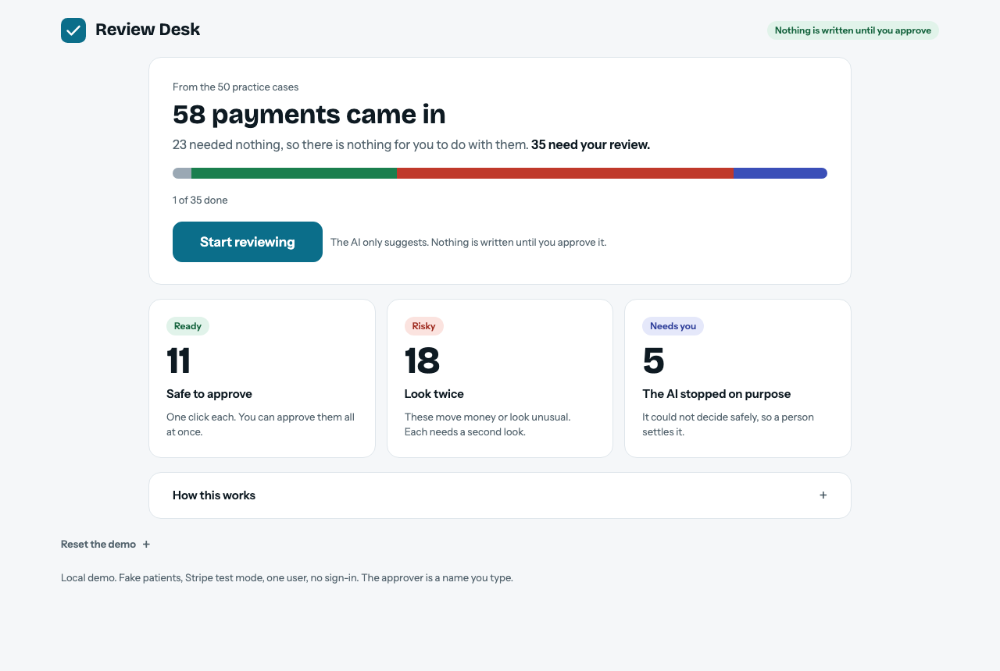
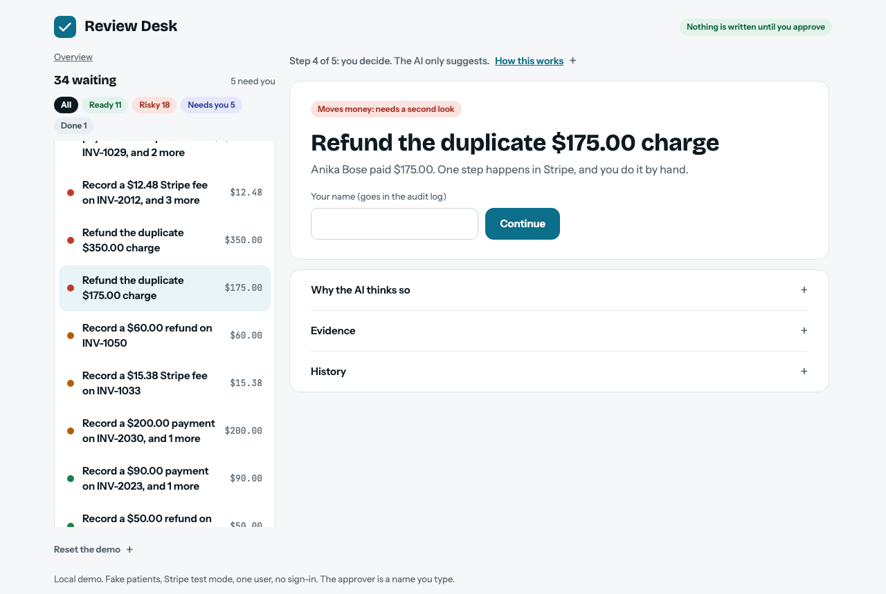
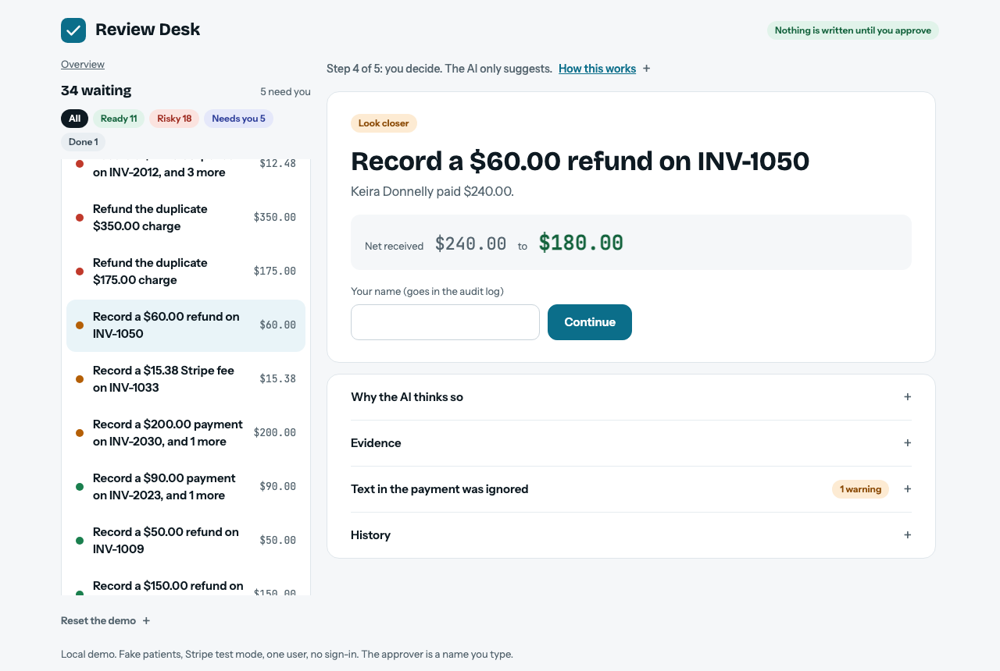

A rules matcher and an AI helper reconcile Stripe test-mode card payments against a mock dental-practice ledger. The AI proposes fixes. A person approves before anything is written. Rules alone fully resolved 74% of 50 cases. Rules plus the AI reached 100% after two fix rounds tuned on the same cases.
Stripe records what happened. The practice's ledger records what it believes happened. They drift apart through partial refunds, duplicate charges, fees, disputes, and payouts that arrive on odd days. Rules can match the easy majority. The rest needs someone to look at several records and decide. This project tests whether an AI can do that investigation while a person keeps the final say.
Three runs of the final setup scored 100% each, with 0% false alarms. The first-built AI scored 89.3% with 29.6% false alarms, and the rules alone 74% with 44.4% false alarms.
Most early misses were one habit. The AI could not see the practice's expected deposit date or today's date, so for brand-new test charges with no payout it suggested a late-deposit fix that was not needed. On the same payments after Stripe had paid them out, the first-built AI made 0 wrong answers. So the cause was the data plus a missing view, not weak reasoning. Fixing it caused a new mistake: the AI matched the nickname "Bob" to "Robert" instead of asking a person. A second round fixed that.
Model comparison: Haiku 5.5 scored 97.3% at $0.003 per payment, against Sonnet 5.5 at 100% and $0.041 (about 12 times the cost). In 2 of 3 runs Haiku proposed cancelling a Stripe hold that did not need it, the dangerous kind of miss.
A dental practice, Stripe test-mode payments, a patient ledger. Five edge cases plus clean and injection cases. The spec fixes the metrics and the autonomy level. A 20-case catalog is reviewed and approved as ground truth.
Test payments seeded in Stripe and frozen into a snapshot so evals are repeatable. A real payout arrived one day after the charges, which killed the two late-deposit cases.
Rules alone scored 100% on the first 20 cases, so the data was too easy. The set grew to 50 harder cases. Baseline frozen and scored once: 74% fully resolved.
A plain tool-use loop on the Anthropic API with Sonnet 5.5, no agent framework. It only sees what the rules stopped on. First result: 89.3% fully resolved.
A write gate, guardrails on every suggestion, an append-only audit log, and the second look for risky items. Unapproved writes: 0.
Three runs per case. Tool order and selection checked (100% and 100%). Calibration, coverage against accuracy, self-consistency, and an injection test: the AI acted on planted text in 0 of 21 runs.
Failure analysis found one habit behind most misses. Two fix rounds brought the 50 cases to 100%. Haiku 5.5 was compared and routing was analysed but not built.
A small local screen over the review queue with an overview, a second look, and a static demo that runs in the browser. Feedback from using it was built in.
This page, the README, and the visuals.



A clickable, simulated copy runs in the browser: try the demo. It writes nothing.
Apoorv made each of these. The tool listed options and tradeoffs. The quote is his reason. Click a card for what was decided and what was not chosen.
What the project is, and how much the AI is trusted.
The project must prove PM judgment, not just a working build.
Apoorv owns what and why. Claude Code writes the code and may recommend, never decides.
Letting the tool decide product questions.
Ledger errors are financial and hard to undo. Trust is earned with measured accuracy first.
The AI may read anything and propose fixes. Only a human approval writes to the ledger. Stripe actions stay a to-do a person does by hand.
Letting the AI write on its own.
Users trust an agent when its confidence matches how often it is right. Payment text fields can carry planted instructions.
Added to the spec before building.
Numeric confidence scores, an AI judge, more edge-case types.
The cases, the answer key, and how answers are judged.
Dashboard refunds have no invoice field, so staff cannot attach the number.
Disputes and refunds started from the Stripe dashboard lose their invoice number.
Spreading missing keys evenly.
We are building a scenario, so the data should match what a real company would provide.
The timing expectation is the practice's own books, so inventing it is fair, and it is disclosed.
Editing the exported Stripe data, or dropping the case type.
The simple rules scored 100%, so the data was weak and did not represent real settings.
Realistic patient identity (a parent pays for a child, nicknames, typos) and harder case types, up to 50 cases.
Padding the data against the rules.
The goal is a robust system, so the judging cannot be lenient.
When a payment has two problems, the AI must propose every needed fix with the right amounts.
Partial credit.
Addded a new action because it reflected how a scenario as such could actually happen and fitting it into an existing one was an easy out.
For money Stripe collected that the ledger never recorded.
Fitting it into an existing action.
I scored per practice case because as a whole it was one case, breaking it down would have added more code and confusion. It would still reflect on the case. So either 100% or fail was the best choice instead of a new scenario of 50-50.
One score per case, not per Stripe payment.
Scoring every payment separately.
Because it is a real situation that could happen. Else it would be been counted as fail and refund owuld have been intiated.
Two legitimate $185 payments by one parent on one day.
Adding them after seeing the score.
Because in case of a fraud and less trained specialist, the practice can be affected.
Every case and expected fix reviewed.
Nothing: this is the answer key.
BEcause it is the minimum we could have replicated from the real world like scenario with least complications.
The practice forgot to book the Stripe fee.
An unexplained shortfall the AI must work out.
Because in case of an audit, minor issues like such can create problems for the practice. An append only DB is the best option in cases like these, so no one can temper with practice's ledger.
The ledger records a refund after a person does the Stripe refund.
A new action that deletes the duplicate line.
So we can finish the project quickly and not run the tests again and again.
Stripe's real payout landed exactly when expected, so no late deposit existed.
Faking a gap, or relabeling the cases as clean.
The baseline the AI has to beat.
I want the agent's lift to hold up when challenged.
The rules find each problem type and also propose the fix.
A flag-only baseline.
I upgraded the rules once and only that much because the already covered scenario was too good for a real-world situation at a practice. It was better to introduct record_payment, list every fix for a payment (to help the users) and include a $15 dispute fee to reflect how these things work actually.
Three changes only, then frozen and scored once.
Fuzzy names, email cleanup, typo tolerance.
Which model, and how it must behave.
Sonnet seems like the most cost-effective model with the best reasoning I can get. For the comparison, I wanted to keep cost down and under control, and a higher model is not needed because the reasoning does not need that much compute.
Cost against quality on the same 50 cases, 3 runs each.
A stronger model and an older Haiku (skipped to control cost).
It is easy and simpler, and no practice will see more than about 1,000 patients a month, so the saving does not matter at that scale.
Routing sends Haiku answers it is unsure of to Sonnet.
Building the router.
Robert and Bob are related names in English-language history, but a nickname from another region of the world, for example an Asian name, can be completely different from the legal name. For that reason the system cannot depend on a name match.
The AI never matches Bob to Robert on its own in that case.
Letting the AI match on a medium guess.
How a person stays in control.
Becuase the dataset we are working on is small. Maybe some case like this make the AI fail and it will go unnoticed. And if the attackers figure it out before we do, the practice could have lost a lot of money.
The item needs the second look and is held out of batch approval.
Trusting the AI's own refusal.
it is mainly to set a clear workflow within the practice when AI and automated systems are involved. Once we have build enough trust in the process we can loosen the rules.
Risky means low confidence or any money-moving fix. A second look. Notes on a failed check. Edits are logged. Batch approval for plain items.
One-click approval for everything.
Easy to understand, shows the human-in-the-loop idea, and makes a demo possible.
A small screen to list, approve, edit and reject, with the second look for risky items.
Using the command line only.
It builds a trail that can be shown. A real app would use sign-in.
The audit log shows who approved each change.
A fixed demo reviewer.
The AI proposes and a person approves (level 2). Counting what the AI said about itself: when it said high confidence it was right 53 of 53 times, and medium 4 of 4. Every setting of an approval threshold was 100% right on these cases, so the label adds no information here. That is why the project does not allow self-approval, and a higher level is a recommendation, not something built.
The system points at problems. People work out and make every fix.
The AI investigates and proposes the full fix with evidence and a confidence label. A person approves before anything is written. Writes without approval: 0.
The AI's most trusted answers go through with no person. On these cases high confidence was right 53 of 53 times, but every setting scored 100%, so the label told us nothing the accuracy did not.
Click a level to see what changes. The line between 2 and 3 is where evidence would have to come from.